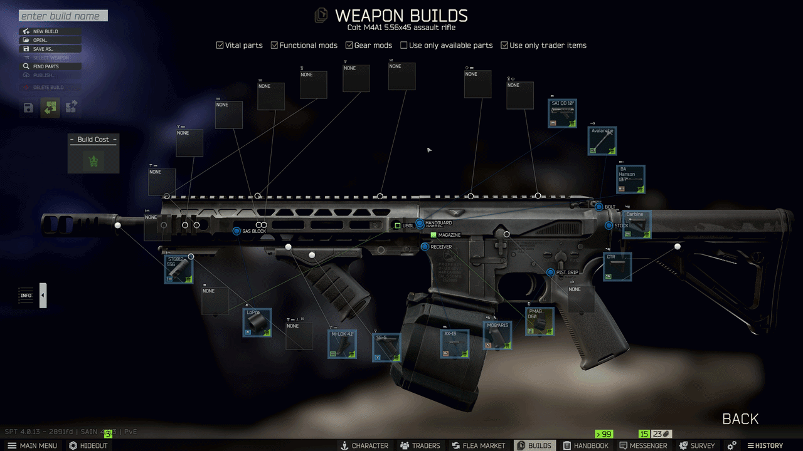

Mod
WeaponBuilderSearch
- Downloads
- 3,159
- Favourites
- 39
- Mod lists
- 52
When a slot has many compatible parts — especially with weapon/content mods — you can filter the list instantly instead of scrolling through dozens of entries.
Features
- Real-time filtering as you type
- Matches short name and full item name (case-insensitive)
- Search bar appears below the attachment list (configurable)
- Only shows when a slot has enough options (configurable minimum)
- Compatible with Scrollable Attachments by pein

Installation
As usual, unzip to your SPT folder
Let me know if you run into any problems or have suggestions for improvement.